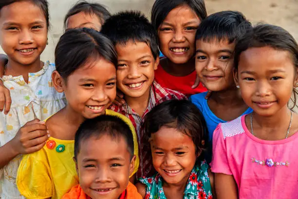
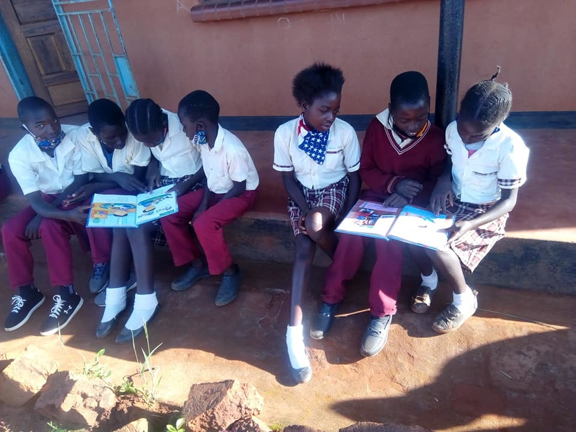
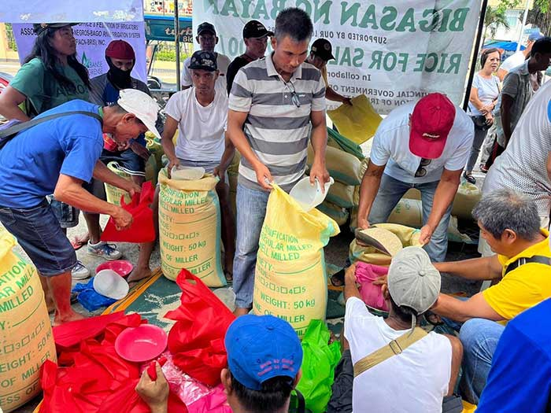
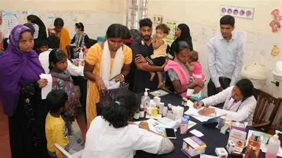

Helping Children Build a Better Future
Save the Children is dedicated to improving the lives of vulnerable children and families around the world. Our organization works with communities to provide education support, nutrition assistance, health care, emergency relief, and protection programs for children living in difficult conditions. We believe that every child deserves the opportunity to grow in a safe environment, receive a quality education, and have access to basic needs that allow them to live healthy and successful lives.

Our Mission and Impact
Our mission is to create long-term positive change in the lives of children and families by supporting education, improving access to health care, and helping communities overcome poverty and hardship. Through partnerships with local communities and volunteers, we continue to provide important resources that help children stay safe, continue learning, and build a brighter future for themselves and their families.
Education Support
Education is one of the most important tools that can change a child’s future. Our organization provides school supplies, books, uniforms, and learning materials to children who may not have access to educational resources. We also support community learning programs that encourage children to continue their education and develop important skills for the future.
Nutrition Programs
Many families struggle to provide enough food for their children every day. Through our nutrition support programs, we distribute food packages and essential supplies to families experiencing hardship. Our goal is to reduce hunger, improve children’s health, and ensure that children receive the nutrition they need to grow, learn, and stay healthy.
Health and Medical Care
Access to health care is important for every child and family. We help communities receive medical assistance, health education, and support services that improve overall well-being. Our programs focus on helping children stay healthy and protecting families from preventable illnesses and health risks.
See Our Work in Action
This video shows some of the ways our organization supports children and families in different communities. Through education support, food assistance, and health programs, we continue to make a positive difference in the lives of many people around the world.
Stories of Hope and Support
Every program we create is designed to bring hope and support to children and families facing challenges. From helping students continue their education to providing food and health services for families in need, our work focuses on creating stronger communities and helping children build better futures.



Want to Make a Difference?
Your support can help change lives and bring hope to children and families in need. Together, we can continue creating stronger communities and brighter futures for children around the world.
Help Now